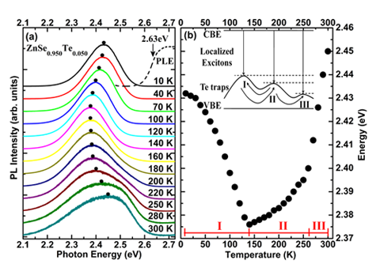
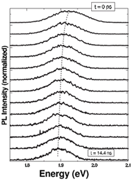
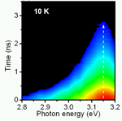
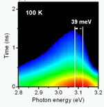
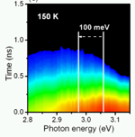

計劃內容 合作教授 新穎材料開發 新穎材料開發
- 碲硒化鋅半導體之變溫載子複合機制研究：
利用分子束磊晶術成長高度不匹配二六族碲硒化鋅半導體薄膜(ZnSe0.950Te0.050)，利用時間解析光激螢光頻譜觀察載子在材料內的躍遷行為，藉由改變溫度對碲硒化鋅載子躍遷進行深入的研究，我們提出一個載子傳輸模型來解釋此系統複雜的載子復合行為，並與氧硒化鋅半導體(ZnSe0.947O0.053)之載子複合行為做深入探討與比較。研究成果已刊登在Appl. Phys. Letts. 100, 071912 (2012)。

- 碲化錳鋅量子點之磁光特性研究：
利用分子束磊晶系統，在砷化鎵基板上成功成長出碲化錳鋅(ZnMnTe)量子點，並對此樣品作磁光特性研究。我們可以觀察到隨時間增加其譜峰值有一紅位移的現象產生，而其位移量約為30 meV，這主要是因為磁極化子在量子點中形成而造成一個紅位移的現象。本研究成果已刊登在Phys. Rev. B 82 195320 (2010)，J. Cryst. Growth 323, 380 (2011)。

- 氧化鎘鋅薄膜之載子動力學研究：
利用分子束磊晶系統成長氧化鎘鋅(ZnCdO)。利用變溫時間解析光激螢光量測，觀察載子受溫度影響的躍遷行為，發現在10K時螢光能量隨時間變化並無改變；當溫度升高至100K時，螢光能量隨時間變化發生39 meV的紅位移；當溫度提升至150K時螢光能量位置更將隨著時間變化發生100 meV的能量紅位移。因此我們認為載子在200 K前，受熱效應而藉由聲子散射的方式更容易往較低的束縛態躍遷。

- 氧化錳鋅薄膜之磁光特性研究：
利用分子束磊晶系統，在藍寶石基板上成功成長出氧化錳鋅(ZnMnO)薄膜。在0.3%錳摻雜的樣品作磁光量測即可觀察到在0.3T磁場下的右旋以及左旋極化光光譜有發生1.4%的極化率差異。